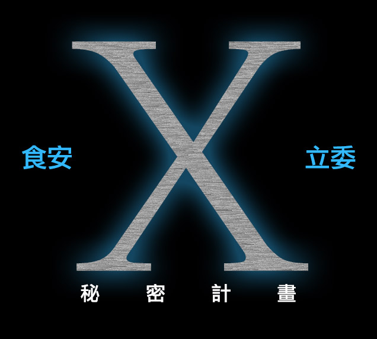

食安x立委秘密計畫-國會調查兵團-啟動因子
我們是國會調查兵團網站（https://cic.tw）的製作團隊，
我們希望可以用不同的方式，讓更多人一起加入監督國會的行列。
因此之前在做網站的同時，
我們也有另外一項計畫：食安X立委秘密計畫。
希望可以採訪到這次有參與修法的兩黨立委，最後集結出書。
我們希望可以用不同的方式，讓更多人一起加入監督國會的行列。
因此之前在做網站的同時，
我們也有另外一項計畫：食安X立委秘密計畫。
希望可以採訪到這次有參與修法的兩黨立委，最後集結出書。
當時民進黨的部份已經訪到尤美女與田秋瑾兩位委員。
而國民黨立委只有訪談到李貴敏委員，
江惠貞、王育敏兩位委員雖然都有透過國會助理聯繫過，但總之無疾而終。
那時候顧及到希望兩黨的比例分配上不想要太懸殊，
才能夠比較平衡呈現兩造的觀點。
而計畫進行的過程中，由於我們是志工團體，
後期大家能夠繼續投入的時間有限，因此這個計畫當時就停止了，
也沒有再繼續去訪談民進黨的林淑芬委員。
而國民黨立委只有訪談到李貴敏委員，
江惠貞、王育敏兩位委員雖然都有透過國會助理聯繫過，但總之無疾而終。
那時候顧及到希望兩黨的比例分配上不想要太懸殊，
才能夠比較平衡呈現兩造的觀點。
而計畫進行的過程中，由於我們是志工團體，
後期大家能夠繼續投入的時間有限，因此這個計畫當時就停止了，
也沒有再繼續去訪談民進黨的林淑芬委員。
但已經訪談的三位立委，訪談內容其實很精彩。雖然還不足以寫成書，
我們想秉持著open data的精神，
於是還是決定把訪談內容的文字稿整理出來。
這個網站將會把訪談內容陸續整理後釋出。
我們想秉持著open data的精神，
於是還是決定把訪談內容的文字稿整理出來。
這個網站將會把訪談內容陸續整理後釋出。